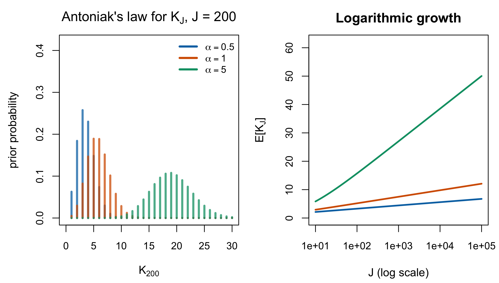
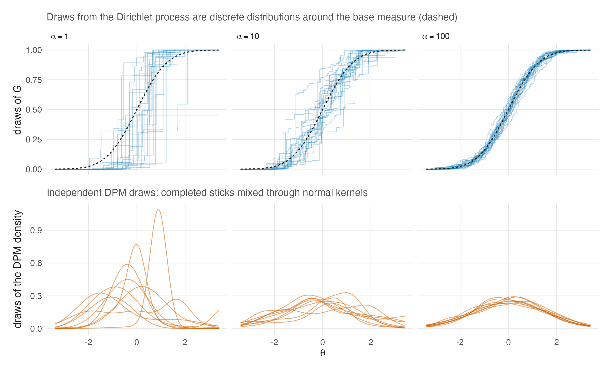
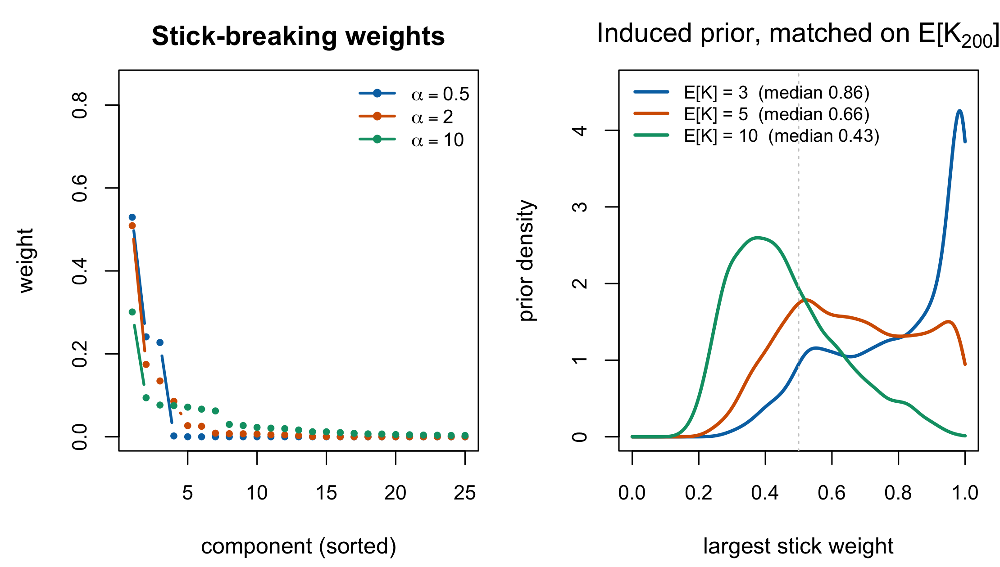

| Representation | What it says | What it makes obvious | What it hides | Source |
|---|---|---|---|---|
| Ferguson’s definition | for every measurable partition, the vector of probabilities is Dirichlet with parameter \((\alpha(A_1),\dots,\alpha(A_k))\) | conjugacy: the posterior is \(\mathrm{DP}(\alpha+\sum_i\delta_{X_i})\) | that draws are discrete; existence needs Kolmogorov | Ferguson (1973) |
| Stick-breaking | \(P=\sum_n p_n \delta_{Y_n}\) with \(p_n=\theta_n\prod_{m<n}(1-\theta_m)\), \(\theta_m\sim\mathrm{Beta}(1,\alpha(\mathcal{X}))\), \(Y_n \sim G_0\) | almost-sure discreteness, and the size of the largest atom | the partition structure | Sethuraman (1994) |
| Pólya urn / Blackwell–MacQueen | draw \(X_n\) from \(\alpha+\sum_{i<n}\delta_{X_i}\), normalized; the empirical measure converges to a discrete \(P\) distributed as Ferguson’s | the predictive rule, hence exchangeability and the link to the CRP | that \(\alpha\) is a measure and not a number, if written carelessly | Blackwell & MacQueen (1973) |
| Chinese restaurant process | customer \(n\) joins an occupied table with probability proportional to its size, or a new one with probability proportional to \(\alpha(\mathcal{X})\) | the induced partition, hence \(K_J\) and Antoniak’s law | the random measure entirely — this is the level R2 objected to | induced; Antoniak (1974) |
15 The Dirichlet Process
Reviewer 2 raised two specific objections to the manuscript’s treatment of the Dirichlet process: the parameter \(\alpha\) is misnamed, and the Chinese restaurant process is introduced with no stated connection to the process it is supposed to represent. Both are symptoms of one thing — the DP treated as a black box — and this chapter opens the box.
It is the longest chapter in the book, and deliberately self-contained. A reader who accepts Chapter 14’s conclusion that the DP’s distinguishing feature is not what it can represent but what it does not have to be told is entitled to see exactly what it is told instead.
15.1 Ferguson’s definition
Definition 15.1 The Dirichlet process. Restated from Ferguson (1973)
Let \((\mathcal{X}, \mathcal{A})\) be a measurable space and \(\alpha\) a finite non-null measure on it. A stochastic process \(P\) indexed by the elements of \(\mathcal{A}\) is a Dirichlet process with parameter \(\alpha\) if for every measurable partition \((A_1,\dots,A_k)\) of \(\mathcal{X}\) the random vector \((P(A_1),\dots,P(A_k))\) has a Dirichlet distribution with parameter \((\alpha(A_1),\dots,\alpha(A_k))\).
Read the parameter carefully, because this is where R2’s first objection is answered. Ferguson’s \(\alpha\) is a measure, not a number. It carries two pieces of information at once, and separating them is the whole of the terminology question:
\[ \alpha(\cdot) = \underbrace{\alpha(\mathcal{X})}_{\text{total mass}} \;\times\; \underbrace{\frac{\alpha(\cdot)}{\alpha(\mathcal{X})}}_{\text{base measure } G_0} . \tag{15.1}\]
The scalar \(\alpha(\mathcal{X})\) is what modern usage calls the concentration parameter — also the precision or mass parameter. The normalized measure \(G_0\) is the base measure, and it is the prior mean: \(\operatorname{E}[P(A)] = G_0(A)\) for every \(A\). Writing “\(\alpha\)” for the scalar is standard and harmless as long as one remembers that in Ferguson it names the whole measure; writing it while calling it something other than a concentration is not, and Section 15.3 says exactly what it concentrates.
Ferguson’s main theorem is conjugacy: if \(X_1,\dots,X_n\) is a sample from \(P\) and \(P \sim \mathrm{DP}(\alpha)\), then the posterior is \(\mathrm{DP}(\alpha + \sum_{i=1}^n \delta_{X_i})\), where \(\delta_x\) gives mass one to \(x\). Every predictive statement below is a corollary of that one line.
15.2 Three representations, and why they are the same object
The DP is usually met through one of three constructions, and a reader who meets only one will find the others mysterious. Table 15.1 lays them side by side.
15.2.1 Stick-breaking
Theorem 15.1 Stick-breaking construction. Restated from Sethuraman (1994)
Let \(\theta_1,\theta_2,\dots\) be i.i.d. \(\mathrm{Beta}(1, \alpha(\mathcal{X}))\) and \(Y_1,Y_2,\dots\) be i.i.d. \(G_0\), independent of the \(\theta\)’s. Put
\[ p_1 = \theta_1, \qquad p_n = \theta_n \prod_{m=1}^{n-1}(1-\theta_m), \qquad P = \sum_{n=1}^{\infty} p_n \delta_{Y_n} . \tag{15.2}\]
Then \(\sum_n p_n = 1\) almost surely and \(P\) is a Dirichlet process with parameter \(\alpha\).
Sethuraman’s paper is a self-contained proof that Equation 15.2 has the Dirichlet finite-dimensional marginals (his Theorem 3.4) and the conjugacy property (his Theorem 4.3). The construction is worth more than its proof, because it makes two things visible that Ferguson’s definition conceals.
The first is almost-sure discreteness: Equation 15.2 is a countable sum of point masses, so a DP draw is a discrete distribution with probability one. Ferguson gives a separate constructive definition in his § 4 that also shows this, but as Sethuraman notes, “it takes some effort to see that the two definitions are equivalent.”
The second is the size of the atoms, which Section 15.6 shows is the quantity that elicitation silently determines.
Proposition 15.1 A DP draw is discrete. Restated; immediate from Theorem 15.1
\(P \sim \mathrm{DP}(\alpha)\) puts probability one on the set of discrete probability measures on \(\mathcal{X}\).
This is a fatal defect if the DP is used directly as a prior for a continuous latent trait, and Section 15.4 is the repair.
15.2.2 The Pólya urn and the restaurant
Theorem 15.2 CRP–DP correspondence. Restated from Blackwell and MacQueen (1973)
Call \(\{X_n\}\) a Pólya sequence with parameter \(\alpha\) if each \(X_n\) is drawn from the normalized measure \(\alpha + \sum_{i<n}\delta_{X_i}\). Then the empirical distribution of colours after \(n\) draws converges as \(n \to \infty\) to a limiting discrete distribution \(P\); the law of \(P\) is Ferguson’s Dirichlet process with parameter \(\alpha\); and given \(P\), the draws \(X_1, X_2, \dots\) are independent with distribution \(P\).
This is the theorem R2 asked for, and it says precisely what the connection is. The Chinese restaurant process is not a separate model, an approximation, or a heuristic. It is the exchangeable partition structure of a Pólya sequence, and a Pólya sequence is what a Dirichlet process looks like once the random measure has been integrated out.
Concretely: since \(\alpha = \alpha(\mathcal{X})G_0\) and \(G_0\) is nonatomic here, a draw from the normalized \(\alpha + \sum_{i<n}\delta_{X_i}\) is a repeat of an earlier value with probability proportional to how many times that value has already occurred, and a fresh draw from \(G_0\) with probability proportional to \(\alpha(\mathcal{X})\). Rename the distinct values “tables” and the observations “customers” and that sentence is the restaurant. The metaphor adds nothing and hides the measure, which is why introducing it first — as the manuscript does — invites exactly the objection R2 raised.
15.3 What \(\alpha(\mathcal{X})\) concentrates
Antoniak (1974, sec. 4, pp. 1160–1163) works out the consequence of the predictive rule. Let \(W_i = 1\) if the \(i\)-th draw is a new distinct value. Then
\[ \Pr(W_i = 1) = \frac{\alpha(\Theta)}{\alpha(\Theta) + i - 1}, \tag{15.3}\]
and \(Z_n = \sum_{i \le n} W_i\) is the number of distinct values in the first \(n\) draws. Antoniak draws the conclusion that settles the naming question: the rate at which new distinct values appear “depends only on the magnitude of \(\alpha(\Theta)\), and not the shape of \(\alpha(\cdot)\),” while the distinct values themselves are distributed as \(G_0 = \alpha(\cdot)/\alpha(\Theta)\).
The two arguments of the DP therefore do disjoint jobs. \(G_0\) says where atoms fall; \(\alpha(\mathcal{X})\) says how many there are. Calling the second a concentration parameter is not a convention — it is a description.
Theorem 15.3 The distribution of the number of clusters. Restated from Antoniak (1974)
If \(G_0\) is nonatomic, let \(K_J\) be the number of distinct values among \(J\) draws. More generally the same formulas count occupied CRP tables, which need not equal distinct values when \(G_0\) has atoms.
\[ \Pr(K_J = k) = \frac{|s(J,k)|\,\alpha(\mathcal{X})^k} {\alpha(\mathcal{X})\,(\alpha(\mathcal{X})+1)\cdots(\alpha(\mathcal{X})+J-1)}, \tag{15.4}\]
where \(|s(J,k)|\) are unsigned Stirling numbers of the first kind, and
\[ \operatorname{E}[K_J] = \sum_{m=1}^{J}\frac{\alpha(\mathcal{X})}{\alpha(\mathcal{X})+m-1} = \alpha(\mathcal{X})\{\psi(\alpha(\mathcal{X})+J) - \psi(\alpha(\mathcal{X}))\} \;\approx\; \alpha(\mathcal{X})\log\!\frac{J + \alpha(\mathcal{X})}{\alpha(\mathcal{X})} . \tag{15.5}\]
Moreover \(K_J\) is sufficient for \(\alpha(\mathcal{X})\).
Proof of the closed form. Antoniak gives the sum and the logarithmic approximation directly. The digamma expression follows because \(\sum_{m=1}^{J} (\alpha+m-1)^{-1} =
\psi(\alpha+J) - \psi(\alpha)\). The pmf and its mean are checked numerically in code/R/15-derivation-checks.R. ∎
Two consequences carry into the design of any application.
The number of clusters grows like \(\log J\), not like \(J\). From Equation 15.5, ten times as many people buys only about \(2.3\,\alpha(\mathcal{X})\) more clusters. A DP is a parsimony prior, which is easy to miss when it is described as “infinite-dimensional.”
\(\alpha\) is a strong statement, not a vague one. At \(J = 200\) and \(\alpha(\mathcal{X}) = 1\), Equation 15.4 puts a central 95% interval of \([2, 10]\) on \(K_J\). Choosing \(\alpha\) is choosing a fairly tight prior on the number of subpopulations, and Figure 15.1 shows both facts.

15.4 From a discrete draw to a continuous \(G\)
Proposition 15.1 rules out the raw DP as a prior for a latent trait: abilities are continuous, and a prior that puts probability one on discrete distributions would force ties between people who are not tied.
Lo (1984) supplies the step that makes the DP usable. Given a positive normalized kernel \(K(x,u)\) and a finite measure \(\alpha\), he constructs a random density by convolving the kernel with a Dirichlet random probability:
\[ f(x \mid G) = \int K(x,u)\, G(du), \qquad G \sim \mathrm{DP}(\alpha) , \tag{15.6}\]
classifies the posterior of the random density given a sample, and gives the Bayes estimator under squared-error loss. Because \(G\) is discrete, Equation 15.6 is a countable mixture — under a normal kernel, a countable mixture of normals with weights from Equation 15.2 and locations from \(G_0\) — and it is continuous whenever \(K\) is.
This is the object the rest of the book means by “a DPM prior on \(G\),” and its two-line description is worth stating once cleanly. The Dirichlet process supplies the weights and the locations; the kernel supplies the smoothness. Lo notes the no-sample Bayes estimator is \(\int K(x,u)\,G_0(du)\), the base measure convolved with the kernel — so with a normal kernel and a normal \(G_0\), the prior mean of the density is itself normal. A DPM prior is therefore centred on the parametric model it generalizes, which is the cleanest possible answer to a reader who asks what is lost if the truth is normal after all. Centred on is the right phrase and the only right phrase: the normal is the prior mean, and normality sits in the support, but no draw from the prior is exactly normal and the DPM is not a model that “contains” the normal model as a fitted special case — a distinction that matters when results under the two priors are compared, and that Chapter 16 keeps.
Figure 15.2 shows both halves of the construction at once — draws of the discrete \(G\) at three concentrations, and the continuous densities the kernel makes of them.

15.5 Computation, briefly
Two families of algorithm implement Equation 15.6, and the difference is which representation they exploit.
Marginal (collapsed) samplers integrate \(G\) out and work with the Pólya urn predictive rule of Theorem 15.2, updating cluster memberships one at a time. Neal (2000) is the standard catalogue, including the algorithms that handle non-conjugate kernels. Blocked samplers truncate Equation 15.2 at a finite number of components and sample the weights and locations directly; Ishwaran and Zarepour (2000) study the approximation error this truncation incurs.
The companion package uses NIMBLE, whose DP machinery is CRP-based, and the details are Appendix F’s. The point for here is that the choice is a choice between the two representations of Section 15.2 and has no inferential content.
15.6 Choosing \(\alpha\) is not a technicality
Everything above treats \(\alpha(\mathcal{X})\) as given. In practice it is either fixed or given a hyperprior, and individual papers often compare several overlapping strategies. Table 15.2 therefore reports seven source-specific contributions rather than forcing each paper into one exclusive “stance.”
| Source | What the source does | Target or diagnostic | Important limitation |
|---|---|---|---|
| Paganin et al. (2022) | examines induced \(\operatorname{E}[K_N]\) and \(\operatorname{Var}(K_N)\); uses Gamma\((2,4)\) in simulation and Gamma\((1,3)\) for real data | mean and variance of occupied \(K_N\) | the paper does not recommend one Gamma prior reused in every setting |
| Antonelli et al. (2016) | compares moment matching, diffuse Gamma, KL, fixed-\(\alpha\), empirical-Bayes, and importance-sampling strategies | several direct and induced criteria | the compared strategies are alternatives within one paper, not one diffuse stance |
| Lee et al. (2025) | elicits a full distribution for \(K\) via a chi-square construction and fits a Gamma prior by Dorazio’s KL method | the complete elicited distribution of \(K\) | reducing the method to matching \(\operatorname{E}[K]\) omits its defining step |
| Murugiah & Sweeting (2012) | develops hyperparameter selection with and without subjective information and supplies defaults | subjective and default selection regimes | reducing the framework to sensitivity analysis omits its selection method and defaults |
| Dorazio (2009); Rodríguez (2013) | elicits through induced cluster behaviour; derives an objective Ewens Jeffreys prior | partition behaviour or information geometry | Rodríguez’s prior is proper but has no finite moments |
| Vicentini & Jermyn (2025) | specifies \(p(\alpha\mid\eta)\) through prior information on meaningful induced quantities | the induced quantity chosen by the analyst | matching one induced quantity can leave others extreme |
| Lee (2026) | converts cluster-count beliefs into Gamma hyperpriors by two-stage moment matching; a dual-anchor protocol constrains cluster counts and weight concentration jointly | \(\operatorname{E}[K_J]\) and the largest-weight exceedance probability, as a pair | the two anchors can conflict, and the protocol resolves the conflict by explicit trade rather than dissolving it |
The sources differ in both target and method. Paganin et al. examine the induced mean and variance of \(K_N\) and use different Gamma priors in their simulation and real-data analyses; they do not advocate one universal reproducibility prior. Antonelli et al. (2016) compare moment matching, diffuse Gamma, Kullback–Leibler, fixed-\(\alpha\), empirical-Bayes and importance-sampling strategies. Lee et al. (2025) elicit an entire distribution for \(K\) through a chi-square construction and fit a Gamma hyperprior by Dorazio’s KL method, rather than matching only \(\operatorname{E}[K_J]\). Murugiah and Sweeting (2012) develop a selection framework both with and without subjective information and provide defaults. Dorazio (2009) and Rodríguez (2013) supply induced-cluster and objective routes; Rodríguez’s Ewens Jeffreys prior is proper but has no finite moments. Vicentini and Jermyn (2025) pose the current question: specify \(p(\alpha\mid\eta)\) through quantities for which “meaningful” prior information can actually be expressed. The design-conditional framework of this research programme is one answer to that question posed as a procedure: state a belief about the number of occupied clusters at the design’s own \(J\), convert it into a Gamma hyperprior on \(\alpha\) by two-stage moment matching, and — the step the next subsection motivates — anchor the induced weight behaviour at the same time (Lee 2026a). The DPprior package implements the framework, and it is the machinery behind the companion simulation’s “focused” and “broad” elicitation arms (Lee 2026b).
15.6.1 The unintended prior
Vicentini and Jermyn’s framing points at a phenomenon that is easy to demonstrate and easy to miss. Matching one induced quantity leaves the others unconstrained, and they can come out extreme.
Take the most defensible elicitation in the table — matching \(\operatorname{E}[K_J]\) to an expert’s cluster count. At \(J = 200\) and a target of five clusters, Equation 15.5 gives \(\alpha(\mathcal{X}) = 0.80\). Now ask what that same prior says about the largest stick weight in Equation 15.2. The answer, computed in Figure 15.3, is that its median is \(0.66\) and it exceeds \(0.5\) with prior probability \(0.76\).
An analyst who said “I expect about five subpopulations” has therefore also said, without being asked and without noticing, that there is about a 76% chance one subpopulation contains more than half of everybody. At a target of three clusters the median largest weight is \(0.86\).

This is not this book’s discovery and should not be presented as one. It is a known problem with a literature. Greve et al. (2022) identify precisely this as “a major empirical challenge” — characterizing the prior a flexible cluster-count specification induces on the partition — and provide tools for inspecting it. Giordano et al. (2023) make the complementary point that because these models are so flexible “the consequences of prior choices can be opaque,” while prior choice “can have a substantial effect on posterior inferences,” and give a method for quantifying sensitivity to the stick-breaking prior specifically.
The natural repair, once the phenomenon is named, is to elicit both quantities at once — and that is exactly what the dual-anchor protocol of the design-conditional framework does. One anchor pins the expected cluster count; the second pins the prior probability that the largest weight exceeds a stated threshold, the very quantity Figure 15.3 computes and the analyst never meant to assert; the Gamma hyperprior is then chosen to respect both, with the trade between them made explicit when they conflict (Lee 2026a). The implementation exposes the induced quantity directly — the package function that returns \(\Pr(p_{(1)} > t)\) exists precisely so the silent assertion of Section 15.6.1 can be read before it is made (Lee 2026b). The paper is held here only at abstract-and-framework level, so this chapter uses it for the protocol’s stated design and does not import its simulation findings.
The honest summary is that the DP removes the requirement to name a component count and replaces it with a requirement to name a concentration, and that the second choice has more consequences than the first advertises. That is still a gain — a posterior over \(K\) is worth having, and Chapter 14 explains why; the elicitation machinery above exists to make the trade an informed one rather than an escape.
Miller and Harrison (2018) name the alternative: put a prior directly on the number of components in a finite mixture, which makes the cluster-count prior explicit rather than induced. Chapter 14 is where that comparison belongs, and nothing in this chapter argues that the DP is the only defensible choice.
15.7 Sources and provenance
Definition 15.1 is Ferguson (1973), read directly, from his § 1 summary and § 3; the conjugacy theorem and the description of \(\alpha\) as a finite non-null measure are his words. Equation 15.1 is the standard decomposition and is stated here because the measure-versus-scalar distinction is exactly what R2’s objection turns on.
Theorem 15.1 is Sethuraman (1994), read directly: the \(\mathrm{Beta}(1,\alpha(\mathcal{X}))\) sticks, the product form, the almost-sure summation to one, and his Theorems 3.4 and 4.3 establishing the Dirichlet marginals and conjugacy. The remark that the equivalence with Ferguson’s § 4 construction “takes some effort to see” is his.
Theorem 15.2 is Blackwell and MacQueen (1973), read directly from their abstract and § 1: the extended Pólya urn with a continuum of colours, convergence to a limiting discrete \(\mu^*\), the identification of its law with Ferguson’s, and conditional independence given \(\mu^*\). The reduction of the restaurant metaphor to that theorem is this book’s presentation, not theirs, and it is the answer to R2-4b.
Theorem 15.3 and Equation 15.3 are Antoniak (1974, sec. 4, pp. 1160–1163), read directly: the new-value probability, the sum for \(\operatorname{E}(Z_n)\), the logarithmic approximation, the Stirling-number pmf, and the sufficiency of \(Z_n\) for \(\alpha(\Theta)\). The digamma closed form is one line from his sum and is checked numerically rather than taken on trust. The remark that this makes \(\alpha\) a parsimony prior is this book’s reading.
Equation 15.6 is Lo (1984, sec. 2), read directly, including the no-sample Bayes estimator \(\int K(x,u)\,G_0(du)\) from which the “centred on the parametric model” observation follows.
Computation follows Neal (2000) and Ishwaran and Zarepour (2000) at the level of what each family of algorithm does; no algorithm is reproduced here and none of the book’s claims depends on the details.
The seven source-specific elicitation contributions are read at the level of each work’s stated aim and summary of the problem; the rows are explicitly nonexclusive. Rodríguez’s (2013) result that the Ewens Jeffreys prior is proper with no finite moments is from his abstract and is quoted because it is the kind of property that is easy to adopt a prior without knowing. The seventh row and the dual-anchor paragraph cite this programme’s design-conditional elicitation paper at the level of its abstract and stated framework (2026a) and its implementation (2026b), read from the package source and documentation. No substantive simulation finding from the held paper is used as evidence in this chapter.
Figure 15.1 is computed exactly from Equation 15.4 on the log scale. Figure 15.3’s right panel is simulated from Equation 15.2 with a fixed seed; the medians and exceedance probabilities quoted in Section 15.6.1 are from that simulation and are Monte Carlo estimates, not exact values. Figure 15.2 is simulated from Equation 15.2 and Equation 15.6 with a fixed seed and finite truncation, added in this edition (code/R/23-figures-v2-theory.R); it illustrates the objects and asserts nothing. The generated values are frozen in tables/F-stick-crp-summary.rds with a CSV mirror in tables/supplement/. The phenomenon they illustrate is Greve et al.’s (2022) and Giordano et al.’s (2023), and is presented as theirs.
Antonelli, Joseph, Lorenzo Trippa, and Sébastien Haneuse. 2016. “Mitigating Bias in Generalized Linear Mixed Models: The Case for Bayesian Nonparametrics.” Statistical Science 31 (1): 80–95. https://doi.org/10.1214/15-STS533.
Antoniak, Charles E. 1974. “Mixtures of Dirichlet Processes with Applications to Bayesian Nonparametric Problems.” The Annals of Statistics 2 (6): 1152–74. https://doi.org/10.1214/aos/1176342871.
Blackwell, David, and James B. MacQueen. 1973. “Ferguson Distributions via Pólya Urn Schemes.” The Annals of Statistics 1 (2): 353–55. https://doi.org/10.1214/aos/1176342372.
Dorazio, Robert M. 2009. “On Selecting a Prior for the Precision Parameter of Dirichlet Process Mixture Models.” Journal of Statistical Planning and Inference 139 (9): 3384–90. https://doi.org/10.1016/j.jspi.2009.03.009.
Ferguson, Thomas S. 1973. “A Bayesian Analysis of Some Nonparametric Problems.” The Annals of Statistics 1 (2): 209–30. https://doi.org/10.1214/aos/1176342360.
Giordano, Ryan, Runjing Liu, Michael I. Jordan, and Tamara Broderick. 2023. “Evaluating Sensitivity to the Stick-Breaking Prior in Bayesian Nonparametrics (with Discussion).” Bayesian Analysis 18 (1): 287–366. https://doi.org/10.1214/22-BA1309.
Greve, Jan, Bettina Grün, Gertraud Malsiner-Walli, and Sylvia Frühwirth-Schnatter. 2022. “Spying on the Prior of the Number of Data Clusters and the Partition Distribution in Bayesian Cluster Analysis.” Australian & New Zealand Journal of Statistics 64 (2): 205–29. https://doi.org/10.1111/anzs.12350.
Ishwaran, H., and M. Zarepour. 2000. “Markov Chain Monte Carlo in Approximate Dirichlet and Beta Two-Parameter Process Hierarchical Models.” Biometrika 87 (2): 371–90. https://doi.org/10.1093/biomet/87.2.371.
Lee, JoonHo. 2026a. Design-Conditional Prior Elicitation for Dirichlet Process Mixtures: A Unified Framework for Cluster Counts and Weight Control. arXiv; arXiv. https://doi.org/10.48550/arXiv.2602.06301.
Lee, JoonHo. 2026b. DPprior: Principled Prior Elicitation for Dirichlet Process Mixture Models. https://github.com/joonho112/DPprior.
Lee, JoonHo, Jonathan Che, Sophia Rabe-Hesketh, Avi Feller, and Luke Miratrix. 2025. “Improving the Estimation of Site-Specific Effects and Their Distribution in Multisite Trials.” Journal of Educational and Behavioral Statistics 50 (5): 731–64. https://doi.org/10.3102/10769986241254286.
Lo, Albert Y. 1984. “On a Class of Bayesian Nonparametric Estimates: I. Density Estimates.” The Annals of Statistics 12 (1): 351–57. https://doi.org/10.1214/aos/1176346412.
Miller, Jeffrey W., and Matthew T. Harrison. 2018. “Mixture Models with a Prior on the Number of Components.” Journal of the American Statistical Association 113 (521): 340–56. https://doi.org/10.1080/01621459.2016.1255636.
Murugiah, Siva, and Trevor Sweeting. 2012. “Selecting the Precision Parameter Prior in Dirichlet Process Mixture Models.” Journal of Statistical Planning and Inference 142 (7): 1947–59. https://doi.org/10.1016/j.jspi.2012.02.013.
Neal, Radford M. 2000. “Markov Chain Sampling Methods for Dirichlet Process Mixture Models.” Journal of Computational and Graphical Statistics 9 (2): 249–65. https://doi.org/10.1080/10618600.2000.10474879.
Rodríguez, Abel. 2013. “On the Jeffreys Prior for the Multivariate Ewens Distribution.” Statistics & Probability Letters 83 (6): 1539–46. https://doi.org/10.1016/j.spl.2013.02.014.
Sethuraman, Jayaram. 1994. “A Constructive Definition of Dirichlet Priors.” Statistica Sinica 4 (2): 639–50. https://www.jstor.org/stable/24305538.
Vicentini, Carlo, and Ian Hyla Jermyn. 2025. Prior Selection for the Precision Parameter of Dirichlet Process Mixtures. arXiv. https://doi.org/10.48550/arXiv.2502.00864.